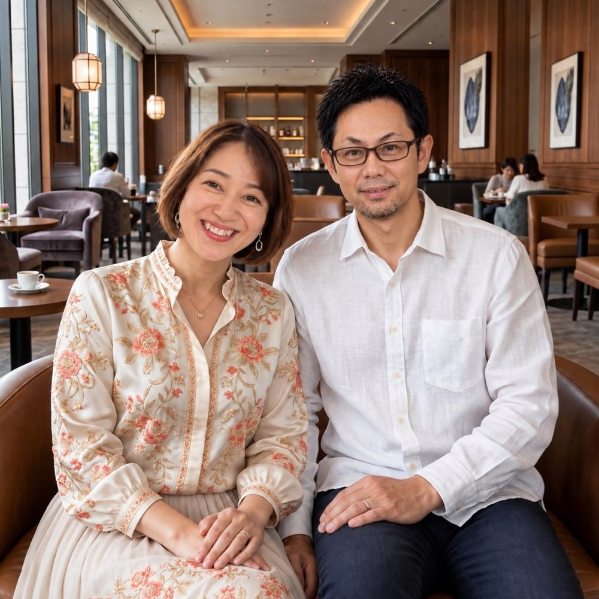

✦ あなたの経験が、誰かの希望になる
「私の経験なんて…」が、
誰かに選ばれる仕事へ。

何を仕事にしたらいいか分からない状態から、
自分だけの商品をつくり、初開催まで実現する6か月。
自分ビジネス実現プログラム
あっきー × さおりん
想いを言葉に商品をつくる初開催まで伴走
こんな気持ち、抱えていませんか？
- 人の役に立つ仕事がしたい。でも何ができるか分からない
- 学んだことはあるのに、自分の商品にできない
- AIやCanvaを開くと、手が止まってしまう
- 一人で発信・募集・Zoom開催まで進める自信がない
動けなかったのは、意志が弱いからではありません。
BEFORE / AFTER
受講前と、半年後のあなた
受講前
- 何が商品になるか分からない
- 強みを説明できない
- パソコン画面で手が止まる
- 発信や募集が怖い
- 一人では先延ばしにしてしまう
⬇
半年後
- 私の商品がある
- 誰に何を届けるか分かる
- 必要なツールを操作できる
- 講座を案内し、開催できる
- 開催後も改善していける
たった6か月で、ここまで変わる。
YOUR STRENGTHS
あなたの経験のなかに眠る、5つの強み
- 乗り越えたこと
- 自然にできること
- 何度も頼まれること
- 夢中になれること
- 人より少し詳しいこと
あなたの「当たり前」が、誰かの道しるべになります。
6 MONTH ROADMAP
「知っている」と「できる」の間を、
二人と一緒に越えていく。
見つける → 決める → つくる → 整える → 練習する → 届ける
いつかやりたいを、半年後の初開催へ。
1か月目見つける
自分の経験と強みから、商品のタネを「見つける」。たった6か月。一つずつ、確実に。
- 経験・強みの棚卸しができる
- 頼まれごとや夢中になれることが整理できる
- 最初の商品のタネが見つかる
2か月目決める
届ける相手と商品のテーマを「決める」。あれもこれもではなく、最初の一歩に必要な軸を選びます。
- 商品のテーマが決まる
- 届けたい相手が明確になる
- 商品の大まかな構成が見えてくる
3か月目つくる
講座・LP・スライドを一緒に「つくる」。想いを言葉にし、形に整えます。
- 講座の内容が決まる
- LP、告知文、スライドを一緒に作れる
- 「形になった」という感覚が持てる
4か月目整える
申込導線と開催環境を「整える」。当日を安心して迎えるために、導線と準備を整えます。
- 申込方法が決まる
- Zoom・申込システムの操作が分かる
- 「本番に進める」という自信がつく
5か月目練習する
仲間と2人1組で「練習する」。小さな場で試してから、本番に向かいます。
- 模擬開催を体験できる
- お客様の反応が分かる
- 改善点と自信を得られる
6か月目届ける
必要な人へ、商品を「届ける」。初開催はゴールではなく、次の商品へつながるスタートです。
- 初開催を自分の力でやり遂げる
- お客様の声を受け取る
- 次の商品・開催への一歩が見える
AI AS A PARTNER
AIは、あなたらしさを消すものではなく、
想いを形にする相棒
- AI・Canvaを一緒に使い、自分の経験と言葉を中心に作る
- AIに丸投げする講座ではありません
- AIが苦手でも、画面を一緒に見ながら進められます
テクノロジーはあなたの個性を消しません。
むしろ、想いをもっと届けやすくする道具です。
DOUBLE SUPPORT
見つける人と、
できるまで隣にいる人。
さおりん｜TECH & CREATIVE
分からないを置き去りにせず、完成まで一緒に進む人
あっきー｜BUSINESS DESIGN
自分らしい仕事の「軸」を、一緒に探す人
01 価値へ翻訳
経験・強み・ミッションを、誰かの役に立つ商品へ
02 売れる形に設計
実績をもとに、商品と集客を具体化
03 画面を見て伴走
AI・Canva・Zoom・申込まで、一緒に操作
SAFE STEPS
一人で本番にさせない、安心の4ステップ
- 一緒に操作：画面を見ながら進める
- 2人1組で練習：小さな場で試す
- クローズ開催：安心できる本番体験
- 本番サポート：当日もそばにいる
「まだ自信がない」まま、準備できていないまま、
一人で舞台に立たせることはしません。
SUPPORT
迷ったとき、止まったとき、
すぐに動ける環境があります。
商品づくりだけで終わらず、発信・ツール操作・練習・開催当日・振り返りまで。「後で調べよう」と抱えたまま止まらなくていい。いつでも聞ける環境があります。
1
隔週・個別Zoom（6か月間）
1回60分。状況に合わせた個別アドバイス。
2
月1回・ビジネス相談会（6か月間）
課題を持ち寄り、仲間と一緒に前進する場。
3
Messenger Q&A（1年間・無制限）
小さな疑問を抱えたままにしない相談環境。
4
ツール操作サポート（1回60分 × 全4回）
Canva・Zoom・申込システムを、画面を見ながら一緒に操作。
5
初開催・技術サポート
Zoom入室から終了まで、技術面と気持ちを支える。
6
開催後の振り返り
お客様の声から、改善点と次の一歩を見つける。
CHECK
今のつまずき診断（3問）
一人で何か月も悩む時間を、「できた」を重ねる時間へ。
今の現在地を、一緒に確認しましょう。
Q1. 今、いちばん止まっているところは？
Q2. パソコン作業で、いちばん困ることは？
Q3. 個別相談で、まず整理したいことは？
FAQ
よくある不安に、お答えします
- Q. まだ商品が決まっていなくても大丈夫ですか？
- 大丈夫です。経験や得意なことを棚卸しし、誰のどんな悩みに役立てられるかから一緒に探します。
- Q. パソコンが苦手でもついていけますか？
- はい。Google Chrome・Zoom・Canva・Messenger・申込システムまで、画面を一緒に見ながら操作します。
- Q. 自信がなくても開催できますか？
- いきなり一人で本番にはしません。一緒に操作、2人1組で練習、クローズ開催、本番サポートの順に段階を踏みます。
- Q. 仕事や家庭と両立できますか？
- 隔週Zoomと非同期Q&Aを使い、ご自身の状況に合わせて一歩ずつ進められます。
✦ YOUR EXPERIENCE IS A GIFT
あなたの中にある経験は、
誰かにとって必要な贈り物です。
個別相談（無料）では、今の状況・作りたいもの・パソコン操作の不安を伺い、どんな順番なら無理なく進められるかを一緒に整理します。料金や日程も、個別相談でご案内します。